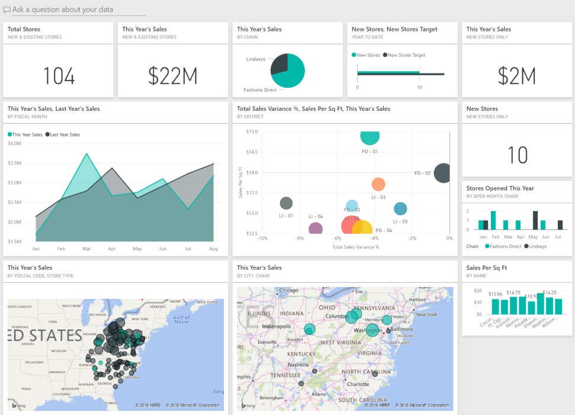
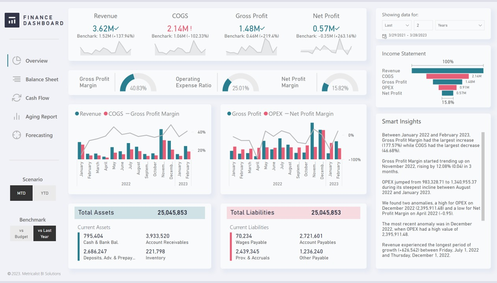
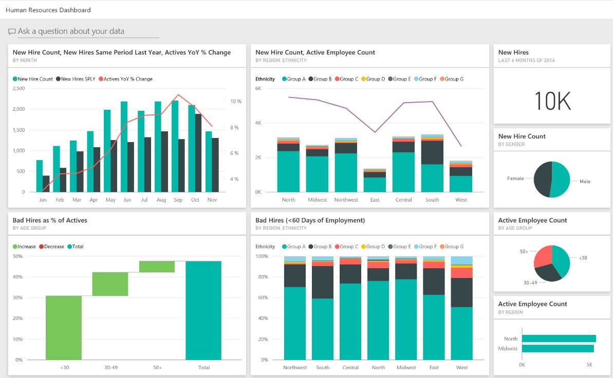
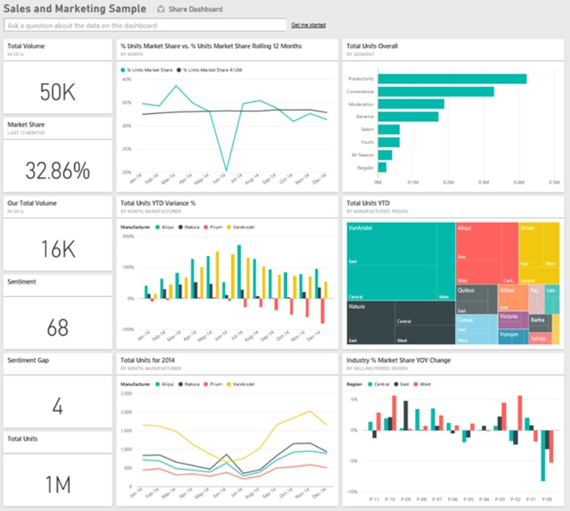

I am Deborah Mulangu
Name: Deborah Mulangu
Profile: Data Analyst | Grant & Financial Analytics
Email: dedytemuls@hotmail.com
Phone: +1 (571) 665-9186
Location: Frederick, MD / USA
Resume: View Full Resume (PDF)
Core Skills
Professional Summary
Detail-oriented Data Analyst with strong experience analyzing financial, grant, and operational data to support compliance, performance tracking, and decision-making. Proven ability to clean, validate, analyze, and report data using Excel, financial systems, and reporting tools. Adept at transforming complex datasets into clear insights, monitoring trends, identifying variances, and supporting audits and leadership reporting. Strong foundation in data accuracy, documentation, and analytical problem-solving.
Certified Power BI Data Analyst Associate (PL-300) with SQL certification from University of Michigan and Tableau fundamentals. Experienced in using SQL, MySQL, Power BI, Tableau, and advanced Excel to deliver high-impact dashboards and analytical reports.
Resume
My education, certifications, and professional experience in data analytics, grant management, financial compliance, and accounting operations
Education
Associate of Applied Science (AAS) in Accounting
2025
Frederick Community College, Frederick, MD
Bachelor of Science – Management
2014
DeVry University, Arlington, VA
Cost Accounting
2013
Vaal University of Technology, South Africa
Certifications
Microsoft Certified Power BI Data Analyst Associate (PL-300)
Microsoft
SQL Certification
University of Michigan
Fundamentals of Visualization with Tableau
University of California
Technical Skills
- Data Analysis & Visualization: Power BI, Tableau, Data Modelling, Dashboard Design
- Technical Expertise: SQL, DAX (Data Analysis Expressions), ETL Processes
- Data Management Tools: Power Query
- Business Tools: Actimize, Jira, Business Objects
- Soft Skills: Collaboration, Communication, Problem Solving, Audit Readiness
Professional Experience
Data Analyst (Grant & Financial Analytics)
Mar 2023 – Present
Baltimore City Health Department, MD
- Analyze large grant and financial datasets to monitor budget performance, spending trends, and funding utilization.
- Develop and maintain structured reports to track revenue, expenditures, and variances against approved budgets.
- Perform data validation and reconciliation to ensure accuracy and compliance with federal, state, and local regulations.
- Collaborate with program teams to interpret data, explain variances, and provide actionable financial insights.
- Prepare quarterly and final analytical reports for stakeholders, ensuring data transparency and accountability.
- Maintain clean, audit-ready datasets and supporting documentation for compliance reviews and audits.
- Respond to auditor and management data requests by extracting, validating, and presenting accurate information.
Technologies Used: SQL, MySQL, Power BI, Tableau, Excel, Microsoft Office 365
Data Analyst (Accounting & Operations Data)
Sep 2018 – Dec 2021
Baraka Services
- Analyzed accounts payable and receivable datasets to identify discrepancies, trends, and improvement opportunities.
- Cleaned, standardized, and validated transaction-level financial data to ensure accuracy in billing, vendor payments, and reporting.
- Reconciled large financial datasets including bank statements, ledgers, and invoices, maintaining high data quality and consistency.
- Developed recurring operational and financial reports to support management decision-making and performance monitoring.
- Conducted variance analysis to identify mismatches between expected and actual financial results.
- Investigated data anomalies and resolved billing inconsistencies, reducing processing errors and rework.
- Supported data-driven process improvements by documenting findings and collaborating with operations and finance teams.
- Assisted with audit preparation by providing clean datasets, reconciliations, and supporting documentation.
Technologies Used: Microsoft Excel (Pivot Tables, VLOOKUP/XLOOKUP, IF formulas), Financial & Accounting Systems, Microsoft Word & PowerPoint, Data Reconciliation & Validation Techniques
Junior Data Analyst / Accountant Data Entry Specialist
01/2012 – 08/2013
CIMU
- Entered, cleaned, and validated high-volume financial data to ensure accuracy, completeness, and consistency.
- Performed data quality checks including duplicate detection, missing data validation, and reconciliation.
- Generated structured reports and summaries to support financial and operational decision-making.
- Supported month-end and year-end reporting by preparing clean datasets for accounting and management teams.
- Assisted senior staff with data analysis, trend identification, and reporting requests.
- Maintained organized data records to ensure easy retrieval for audits and reviews.
- Improved data reliability by following standardized data entry and validation processes.
Technologies Used: Microsoft Excel, Financial Data Systems, Data Validation & Reconciliation Methods, Reporting & Documentation Tools
Recent Projects
Aviation analytics and data visualization projects









HR Analytics Dashboard
Project Summary
The HR Analytics Dashboard provides actionable insights into employee performance, attrition trends, diversity ratios, and workforce demographics. It enables HR managers to monitor KPIs such as retention rate, employee satisfaction, and hiring pipeline efficiency for strategic workforce planning.
Key Features
- Attrition and retention analysis
- Workforce demographic visualization
- Employee satisfaction trend tracking
- Recruitment and training analysis
- Department-level KPI insights
- Dynamic filtering by role, location, and tenure
Technologies Used
Employee Productivity Insights
Project Summary
This dashboard measures employee productivity metrics such as task completion rate, project efficiency, and work-hour utilization. It helps managers identify performance bottlenecks, track individual and team outputs, and improve organizational effectiveness.
Key Features
- Individual vs. team performance comparison
- Daily/weekly productivity trends
- Attendance and time-tracking analysis
- Employee workload visualization
- Custom filters for role, department, and KPI
Technologies Used
Finance Performance Tracker
Project Summary
The Finance Performance Tracker visualizes revenue, expenses, profit margins, and budget utilization. It empowers finance teams to analyze spending efficiency, forecast financial performance, and improve cost management.
Key Features
- Expense vs. revenue trend analysis
- Profit margin tracking by category
- Budget allocation and variance reports
- Year-over-year growth comparison
- Financial KPI summary cards
Technologies Used
Clinic Operations Dashboard
Project Summary
The Clinic Operations Dashboard tracks patient flow, appointment trends, doctor performance, and resource utilization. It supports healthcare administrators in enhancing patient care and operational efficiency.
Key Features
- Daily patient visit and appointment tracking
- Doctor workload and performance metrics
- Departmental efficiency reports
- Wait-time and satisfaction analysis
- Revenue summary and billing insights
Technologies Used
Recruitment Funnel Dashboard
Project Summary
The Recruitment Funnel Dashboard visualizes the entire hiring process — from application to onboarding. It highlights hiring bottlenecks, conversion rates, and recruiter efficiency to enhance HR decision-making.
Key Features
- Candidate pipeline visualization
- Stage-wise conversion rates
- Recruiter performance tracking
- Hiring source effectiveness analysis
- Time-to-hire and cost-per-hire metrics
Technologies Used
Contact
Get in touch for data analytics, financial analysis, grant reporting opportunities or collaborations
Location
Frederick, Maryland, USA
Call Me
+1 (571) 665-9186
Email Me
dedytemuls@hotmail.com